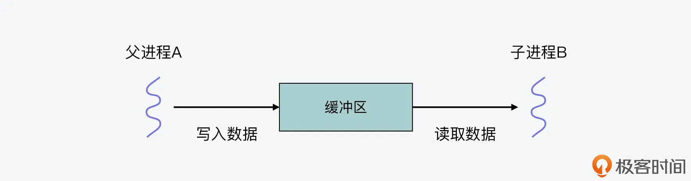
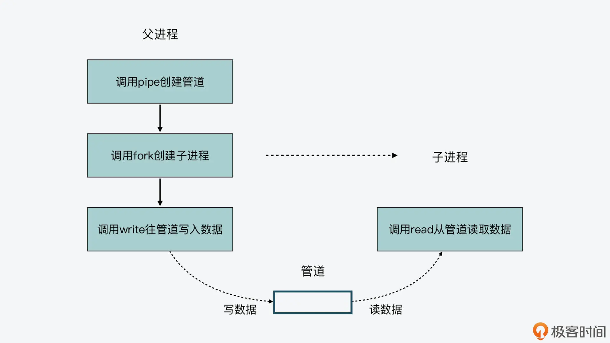
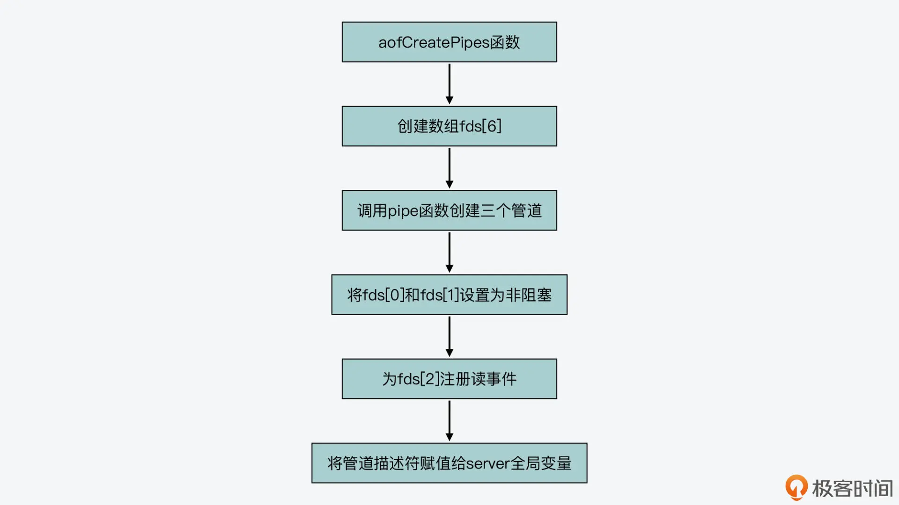
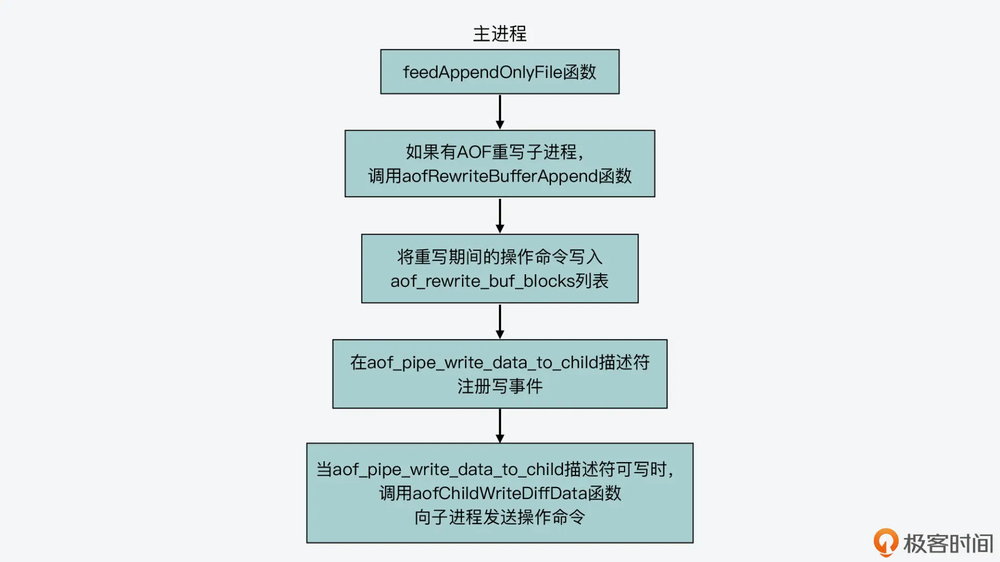
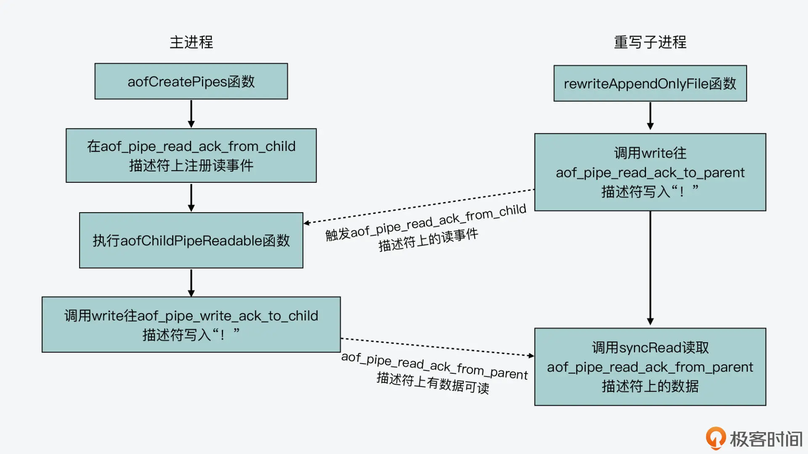

- 00 开篇词 阅读Redis源码能给你带来什么？.md
- 01 带你快速攻略Redis源码的整体架构.md
- 02 键值对中字符串的实现，用char还是结构体？.md
- 03 如何实现一个性能优异的Hash表？.md
- 04 内存友好的数据结构该如何细化设计？.md
- 05 有序集合为何能同时支持点查询和范围查询？.md
- 06 从ziplist到quicklist，再到listpack的启发.md
- 07 为什么Stream使用了Radix Tree？.md
- 08 Redis server启动后会做哪些操作？.md
- 09 Redis事件驱动框架（上）：何时使用select、poll、epoll？.md
- 10 Redis事件驱动框架（中）：Redis实现了Reactor模型吗？.md
- 11 Redis事件驱动框架（下）：Redis有哪些事件？.md
- 12 Redis真的是单线程吗？.md
- 13 Redis 6.0多IO线程的效率提高了吗？.md
- 14 从代码实现看分布式锁的原子性保证.md
- 15 为什么LRU算法原理和代码实现不一样？.md
- 16 LFU算法和其他算法相比有优势吗？.md
- 17 Lazy Free会影响缓存替换吗？.md
- 18 如何生成和解读RDB文件？.md
- 19 AOF重写（上）：触发时机与重写的影响.md
- 20 AOF重写（下）：重写时的新写操作记录在哪里？.md
- 21 主从复制：基于状态机的设计与实现.md
- 22 哨兵也和Redis实例一样初始化吗？.md
- 23 从哨兵Leader选举学习Raft协议实现（上）.md
- 24 从哨兵Leader选举学习Raft协议实现（下）.md
- 25 PubSub在主从故障切换时是如何发挥作用的？.md
- 26 从Ping-Pong消息学习Gossip协议的实现.md
- 27 从MOVED、ASK看集群节点如何处理命令？.md
- 28 Redis Cluster数据迁移会阻塞吗？.md
- 29 如何正确实现循环缓冲区？.md
- 30 如何在系统中实现延迟监控？.md
- 31 从Module的实现学习动态扩展功能.md
- 32 如何在一个系统中实现单元测试？.md
- 结束语 Redis源码阅读，让我们从新开始.md
20 AOF重写（下）：重写时的新写操作记录在哪里？
在上节课，我给你介绍了 AOF 重写过程，其中我带你重点了解了 AOF 重写的触发时机，以及 AOF 重写的基本执行流程。现在你已经知道，AOF 重写是通过重写子进程来完成的。
但是在上节课的最后，我也提到了在 AOF 重写时，主进程仍然在接收客户端写操作，那么这些新写操作会记录到 AOF 重写日志中吗？如果需要记录的话，重写子进程又是通过什么方式向主进程获取这些写操作的呢？
今天这节课，我就来带你了解下 AOF 重写过程中所使用的管道机制，以及主进程和重写子进程的交互过程。这样一方面，你就可以了解 AOF 重写日志包含的写操作的完整程度，当你要使用 AOF 日志恢复 Redis 数据库时，就知道 AOF 能恢复到的程度是怎样的。另一方面，因为 AOF 重写子进程就是通过操作系统提供的管道机制，来和 Redis 主进程交互的，所以学完这节课之后，你还可以掌握管道技术，从而用来实现进程间的通信。
好了，接下来，我们就先来了解下管道机制。
如何使用管道进行父子进程间通信？
首先我们要知道，当进程 A 通过调用 fork 函数创建一个子进程 B，然后进程 A 和 B 要进行通信时，我们通常都需要依赖操作系统提供的通信机制，而管道（pipe）就是一种用于父子进程间通信的常用机制。
具体来说，管道机制在操作系统内核中创建了一块缓冲区，父进程 A 可以打开管道，并往这块缓冲区中写入数据。同时，子进程 B 也可以打开管道，从这块缓冲区中读取数据。这里，你需要注意的是，进程每次往管道中写入数据时，只能追加写到缓冲区中当前数据所在的尾部，而进程每次从管道中读取数据时，只能从缓冲区的头部读取数据。
其实，管道创建的这块缓冲区就像一个先进先出的队列一样，写数据的进程写到队列尾部，而读数据的进程则从队列头读取。下图就展示了两个进程使用管道进行数据通信的过程，你可以看下。

好了，了解了管道的基本功能后，我们再来看下使用管道时需要注意的一个关键点。管道中的数据在一个时刻只能向一个方向流动，这也就是说，如果父进程 A 往管道中写入了数据，那么此时子进程 B 只能从管道中读取数据。类似的，如果子进程 B 往管道中写入了数据，那么此时父进程 A 只能从管道中读取数据。而如果父子进程间需要同时进行数据传输通信，我们就需要创建两个管道了。
下面，我们就来看下怎么用代码实现管道通信。这其实是和操作系统提供的管道的系统调用 pipe 有关，pipe 的函数原型如下所示：
int pipe(int pipefd[2]);
你可以看到，pipe 的参数是一个数组 pipefd，表示的是管道的文件描述符。这是因为进程在往管道中写入或读取数据时，其实是使用 write 或 read 函数的，而 write 和 read 函数需要通过文件描述符才能进行写数据和读数据操作。
数组 pipefd 有两个元素 pipefd[0]和 pipefd[1]，分别对应了管道的读描述符和写描述符。这也就是说，当进程需要从管道中读数据时，就需要用到 pipefd[0]，而往管道中写入数据时，就使用 pipefd[1]。
这里我写了一份示例代码，展示了父子进程如何使用管道通信，你可以看下。
int main()
{
int fd[2], nr = 0, nw = 0;
char buf[128];
pipe(fd);
pid = fork();
if(pid == 0) {
//子进程调用read从fd[0]描述符中读取数据
printf("child process wait for message\n");
nr = read(fds[0], buf, sizeof(buf))
printf("child process receive %s\n", buf);
}else{
//父进程调用write往fd[1]描述符中写入数据
printf("parent process send message\n");
strcpy(buf, "Hello from parent");
nw = write(fd[1], buf, sizeof(buf));
printf("parent process send %d bytes to child.\n", nw);
}
return 0;
}
从代码中，你可以看到，在父子进程进行管道通信前，我们需要在代码中定义用于保存读写描述符的数组 fd，然后调用 pipe 系统创建管道，并把数组 fd 作为参数传给 pipe 函数。紧接着，在父进程的代码中，父进程会调用 write 函数往管道文件描述符 fd[1]中写入数据，另一方面，子进程调用 read 函数从管道文件描述符 fd[0]中读取数据。
这里，为了便于你理解，我也画了一张图，你可以参考。

好了，现在你就了解了如何使用管道来进行父子进程的通信了。那么下面，我们就来看下在 AOF 重写过程中，重写子进程是如何用管道和主进程（也就是它的父进程）进行通信的。
AOF 重写子进程如何使用管道和父进程交互？
我们先来看下在 AOF 重写过程中，都创建了几个管道。
这实际上是 AOF 重写函数 rewriteAppendOnlyFileBackground 在执行过程中，通过调用 aofCreatePipes 函数来完成的，如下所示：
int rewriteAppendOnlyFileBackground(void) {
…
if (aofCreatePipes() != C_OK) return C_ERR;
…
}
这个 aofCreatePipes 函数是在aof.c文件中实现的，它的逻辑比较简单，可以分成三步。
第一步，aofCreatePipes 函数创建了包含 6 个文件描述符元素的数组 fds。就像我刚才给你介绍的，每一个管道会对应两个文件描述符，所以，数组 fds 其实对应了 AOF 重写过程中要用到的三个管道。紧接着，aofCreatePipes 函数就调用 pipe 系统调用函数，分别创建三个管道。
这部分代码如下所示，你可以看下。
int aofCreatePipes(void) {
int fds[6] = {-1, -1, -1, -1, -1, -1};
int j;
if (pipe(fds) == -1) goto error; /* parent -> children data. */
if (pipe(fds+2) == -1) goto error; /* children -> parent ack. */
if (pipe(fds+4) == -1) goto error;
…}
}
第二步，aofCreatePipes 函数会调用 anetNonBlock 函数（在anet.c文件中），将 fds
数组的第一和第二个描述符（fds[0]和 fds[1]）对应的管道设置为非阻塞。然后，aofCreatePipes 函数会调用 aeCreateFileEvent 函数，在数组 fds 的第三个描述符 (fds[2]) 上注册了读事件的监听，对应的回调函数是 aofChildPipeReadable。aofChildPipeReadable 函数也是在 aof.c 文件中实现的，我稍后会给你详细介绍它。
int aofCreatePipes(void) {
…
if (anetNonBlock(NULL,fds[0]) != ANET_OK) goto error;
if (anetNonBlock(NULL,fds[1]) != ANET_OK) goto error;
if (aeCreateFileEvent(server.el, fds[2], AE_READABLE, aofChildPipeReadable, NULL) == AE_ERR) goto error;
…
}
这样，在完成了管道创建、管道设置和读事件注册后，最后一步，aofCreatePipes 函数会将数组 fds 中的六个文件描述符，分别复制给 server 变量的成员变量，如下所示：
int aofCreatePipes(void) {
…
server.aof_pipe_write_data_to_child = fds[1];
server.aof_pipe_read_data_from_parent = fds[0];
server.aof_pipe_write_ack_to_parent = fds[3];
server.aof_pipe_read_ack_from_child = fds[2];
server.aof_pipe_write_ack_to_child = fds[5];
server.aof_pipe_read_ack_from_parent = fds[4];
…
}
在这一步中，我们就可以从 server 变量的成员变量名中，看到 aofCreatePipes 函数创建的三个管道，以及它们各自的用途。
- fds[0]和 fds[1]：对应了主进程和重写子进程间用于传递操作命令的管道，它们分别对应读描述符和写描述符。
- fds[2]和 fds[3]：对应了重写子进程向父进程发送 ACK 信息的管道，它们分别对应读描述符和写描述符。
- fds[4]和 fds[5]：对应了父进程向重写子进程发送 ACK 信息的管道，它们分别对应读描述符和写描述符。
下图也展示了 aofCreatePipes 函数的基本执行流程，你可以再回顾下。

好了，了解了 AOF 重写过程中的管道个数和用途后，下面我们再来看下这些管道具体是如何使用的。
操作命令传输管道的使用
实际上，当 AOF 重写子进程在执行时，主进程还会继续接收和处理客户端写请求。这些写操作会被主进程正常写入 AOF 日志文件，这个过程是由 feedAppendOnlyFile 函数（在 aof.c 文件中）来完成。
feedAppendOnlyFile 函数在执行的最后一步，会判断当前是否有 AOF 重写子进程在运行。如果有的话，它就会调用 aofRewriteBufferAppend 函数（在 aof.c 文件中），如下所示：
if (server.aof_child_pid != -1)
aofRewriteBufferAppend((unsigned char*)buf,sdslen(buf));
aofRewriteBufferAppend 函数的作用是将参数 buf，追加写到全局变量 server 的 aof_rewrite_buf_blocks 这个列表中。
这里，你需要注意的是，参数 buf 是一个字节数组，feedAppendOnlyFile 函数会将主进程收到的命令操作写入到 buf 中。而 aof_rewrite_buf_blocks 列表中的每个元素是 aofrwblock 结构体类型，这个结构体中包括了一个字节数组，大小是 AOF_RW_BUF_BLOCK_SIZE，默认值是 10MB。此外，aofrwblock 结构体还记录了字节数组已经使用的空间和剩余可用的空间。
以下代码展示了 aofrwblock 结构体的定义，你可以看下。
typedef struct aofrwblock {
unsigned long used, free; //buf数组已用空间和剩余可用空间
char buf[AOF_RW_BUF_BLOCK_SIZE]; //宏定义AOF_RW_BUF_BLOCK_SIZE默认为10MB
} aofrwblock;
这样一来，aofrwblock 结构体就相当于是一个 10MB 的数据块，记录了 AOF 重写期间主进程收到的命令，而 aof_rewrite_buf_blocks 列表负责将这些数据块连接起来。当 aofRewriteBufferAppend 函数执行时，它会从 aof_rewrite_buf_blocks 列表中取出一个 aofrwblock 类型的数据块，用来记录命令操作。
当然，如果当前数据块中的空间不够保存参数 buf 中记录的命令操作，那么 aofRewriteBufferAppend 函数就会再分配一个 aofrwblock 数据块。
好了，当 aofRewriteBufferAppend 函数将命令操作记录到 aof_rewrite_buf_blocks 列表中之后，它还会检查 aof_pipe_write_data_to_child 管道描述符上是否注册了写事件，这个管道描述符就对应了我刚才给你介绍的 fds[1]。
如果没有注册写事件，那么 aofRewriteBufferAppend 函数就会调用 aeCreateFileEvent 函数，注册一个写事件，这个写事件会监听 aof_pipe_write_data_to_child 这个管道描述符，也就是主进程和重写子进程间的操作命令传输管道。
当这个管道可以写入数据时，写事件对应的回调函数 aofChildWriteDiffData（在 aof.c 文件中）就会被调用执行。这个过程你可以参考下面的代码：
void aofRewriteBufferAppend(unsigned char *s, unsigned long len) {
...
//检查aof_pipe_write_data_to_child描述符上是否有事件
if (aeGetFileEvents(server.el,server.aof_pipe_write_data_to_child) == 0) {
//如果没有注册事件，那么注册一个写事件，回调函数是aofChildWriteDiffData
aeCreateFileEvent(server.el, server.aof_pipe_write_data_to_child,
AE_WRITABLE, aofChildWriteDiffData, NULL);
}
...}
其实，刚才我介绍的写事件回调函数 aofChildWriteDiffData，它的主要作用是从 aof_rewrite_buf_blocks 列表中逐个取出数据块，然后通过 aof_pipe_write_data_to_child 管道描述符，将数据块中的命令操作通过管道发给重写子进程，这个过程如下所示：
void aofChildWriteDiffData(aeEventLoop *el, int fd, void *privdata, int mask) {
...
while(1) {
//从aof_rewrite_buf_blocks列表中取出数据块
ln = listFirst(server.aof_rewrite_buf_blocks);
block = ln ? ln->value : NULL;
if (block->used > 0) {
//调用write将数据块写入主进程和重写子进程间的管道
nwritten = write(server.aof_pipe_write_data_to_child,
block->buf,block->used);
if (nwritten <= 0) return;
...
}
...}}
好了，这样一来，你就了解了主进程其实是在正常记录 AOF 日志时，将收到的命令操作写入 aof_rewrite_buf_blocks 列表中的数据块，然后再通过 aofChildWriteDiffData 函数将记录的命令操作通过主进程和重写子进程间的管道发给子进程。
下图也展示了这个过程，你可以再来回顾下。

然后，我们接着来看下重写子进程，是如何从管道中读取父进程发送的命令操作的。
这实际上是由 aofReadDiffFromParent 函数（在 aof.c 文件中）来完成的。这个函数会使用一个 64KB 大小的缓冲区，然后调用 read 函数，读取父进程和重写子进程间的操作命令传输管道中的数据。以下代码也展示了 aofReadDiffFromParent 函数的基本执行流程，你可以看下。
ssize_t aofReadDiffFromParent(void) {
char buf[65536]; //管道默认的缓冲区大小
ssize_t nread, total = 0;
//调用read函数从aof_pipe_read_data_from_parent中读取数据
while ((nread =
read(server.aof_pipe_read_data_from_parent,buf,sizeof(buf))) > 0) {
server.aof_child_diff = sdscatlen(server.aof_child_diff,buf,nread);
total += nread;
}
return total;
}
那么，从代码中，你可以看到 aofReadDiffFromParent 函数会通过 aof_pipe_read_data_from_parent 描述符读取数据。然后，它会将读取的操作命令追加到全局变量 server 的 aof_child_diff 字符串中。而在 AOF 重写函数 rewriteAppendOnlyFile 的执行过程最后，aof_child_diff 字符串会被写入 AOF 重写日志文件，以便我们在使用 AOF 重写日志时，能尽可能地恢复重写期间收到的操作。
这个 aof_child_diff 字符串写入重写日志文件的过程，你可以参考下面给出的代码：
int rewriteAppendOnlyFile(char *filename) {
...
//将aof_child_diff中累积的操作命令写入AOF重写日志文件
if (rioWrite(&aof,server.aof_child_diff,sdslen(server.aof_child_diff)) == 0)
goto werr;
...
}
所以也就是说，aofReadDiffFromParent 函数实现了重写子进程向主进程读取操作命令。那么在这里，我们还需要搞清楚的问题是：aofReadDiffFromParent 函数会在哪里被调用，也就是重写子进程会在什么时候从管道中读取主进程收到的操作。
其实，aofReadDiffFromParent 函数一共会被以下三个函数调用。
- rewriteAppendOnlyFileRio 函数：这个函数是由重写子进程执行的，它负责遍历 Redis 每个数据库，生成 AOF 重写日志，在这个过程中，它会不时地调用 aofReadDiffFromParent 函数。
- rewriteAppendOnlyFile 函数：这个函数是重写日志的主体函数，也是由重写子进程执行的，它本身会调用 rewriteAppendOnlyFileRio 函数。此外，它在调用完 rewriteAppendOnlyFileRio 函数后，还会多次调用 aofReadDiffFromParent 函数，以尽可能多地读取主进程在重写日志期间收到的操作命令。
- rdbSaveRio 函数：这个函数是创建 RDB 文件的主体函数。当我们使用 AOF 和 RDB 混合持久化机制时，这个函数也会调用 aofReadDiffFromParent 函数。
从这里，我们可以看到，Redis 源码在实现 AOF 重写过程中，其实会多次让重写子进程向主进程读取新收到的操作命令，这也是为了让重写日志尽可能多地记录最新的操作，提供更加完整的操作记录。
最后，我们再来看下重写子进程和主进程间用来传递 ACK 信息的两个管道的使用。
ACK 管道的使用
刚才在介绍主进程调用 aofCreatePipes 函数创建管道时，你就了解到了，主进程会在 aof_pipe_read_ack_from_child 管道描述符上注册读事件。这个描述符对应了重写子进程向主进程发送 ACK 信息的管道。同时，这个描述符是一个读描述符，表示主进程从管道中读取 ACK 信息。
其实，重写子进程在执行 rewriteAppendOnlyFile 函数时，这个函数在完成日志重写，以及多次向父进程读取操作命令后，就会调用 write 函数，向 aof_pipe_write_ack_to_parent 描述符对应的管道中写入“！”，这就是重写子进程向主进程发送 ACK 信号，让主进程停止发送收到的新写操作。这个过程如下所示：
int rewriteAppendOnlyFile(char *filename) {
...
if (write(server.aof_pipe_write_ack_to_parent,"!",1) != 1) goto werr;
...}
一旦重写子进程向主进程发送 ACK 信息的管道中有了数据，aof_pipe_read_ack_from_child 管道描述符上注册的读事件就会被触发，也就是说，这个管道中有数据可以读取了。那么，aof_pipe_read_ack_from_child 管道描述符上，注册的回调函数 aofChildPipeReadable（在 aof.c 文件中）就会执行。
这个函数会判断从 aof_pipe_read_ack_from_child 管道描述符读取的数据是否是“！”，如果是的话，那它就会调用 write 函数，往 aof_pipe_write_ack_to_child 管道描述符上写入“！”，表示主进程已经收到重写子进程发送的 ACK 信息，同时它会给重写子进程回复一个 ACK 信息。这个过程如下所示：
void aofChildPipeReadable(aeEventLoop *el, int fd, void *privdata, int mask) {
...
if (read(fd,&byte,1) == 1 && byte == '!') {
...
if (write(server.aof_pipe_write_ack_to_child,"!",1) != 1) { ...}
}
...
}
好了，到这里，我们就了解了，重写子进程在完成日志重写后，是先给主进程发送 ACK 信息。然后主进程在 aof_pipe_read_ack_from_child 描述符上监听读事件发生，并调用 aofChildPipeReadable 函数向子进程发送 ACK 信息。
最后，重写子进程执行的 rewriteAppendOnlyFile 函数，会调用 syncRead 函数，从 aof_pipe_read_ack_from_parent 管道描述符上，读取主进程发送给它的 ACK 信息，如下所示：
int rewriteAppendOnlyFile(char *filename) {
...
if (syncRead(server.aof_pipe_read_ack_from_parent,&byte,1,5000) != 1 || byte != '!') goto werr
...
}
下图也展示了 ACK 管道的使用过程，你可以再回顾下。

这样一来，重写子进程和主进程之间就通过两个 ACK 管道，相互确认重写过程结束了。
小结
今天这节课，我主要给你介绍了在 AOF 重写过程中，主进程和重写子进程间的管道通信。这里，你需要重点关注管道机制的使用，以及主进程和重写子进程使用管道通信的过程。
在这个过程中，AOF 重写子进程和主进程是使用了一个操作命令传输管道和两个 ACK 信息发送管道。操作命令传输管道是用于主进程写入收到的新操作命令，以及用于重写子进程读取操作命令，而 ACK 信息发送管道是在重写结束时，重写子进程和主进程用来相互确认重写过程的结束。最后，重写子进程会进一步将收到的操作命令记录到重写日志文件中。
这样一来，AOF 重写过程中主进程收到的新写操作，就不会被遗漏了。因为一方面，这些新写操作会被记录在正常的 AOF 日志中，另一方面，主进程会将新写操作缓存在 aof_rewrite_buf_blocks 数据块列表中，并通过管道发送给重写子进程。这样，就能尽可能地保证重写日志具有最新、最完整的写操作了。
最后，我也再提醒你一下，今天这节课我们学习的管道其实属于匿名管道，是用在父子进程间进行通信的。如果你在实际开发中，要在非父子进程的两个进程间进行通信，那么你就需要用到命名管道了。而命名管道会以一个文件的形式保存在文件系统中，并会有相应的路径和文件名。这样，非父子进程的两个进程通过命名管道的路径和文件名，就可以打开管道进行通信了。
每课一问
今天这节课，我给你介绍了重写子进程和主进程间进行操作命令传输、ACK 信息传递用的三个管道。那么，你在 Redis 源码中还能找见其他使用管道的地方吗？
© 2019 - 2023 Liangliang Lee. Powered by gin and hexo-theme-book.